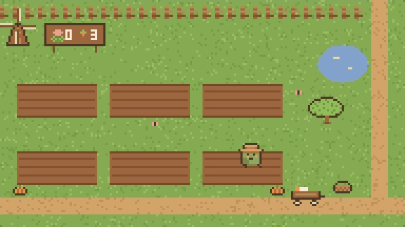

Your agents, tending a garden.
Inkbean, a plugin for Claude Code

Recorded from the real window while two Claude Code sessions ran. Four moments, each at real speed.
Get Inkbean, $7
One-time purchase on Gumroad. Updates are free.